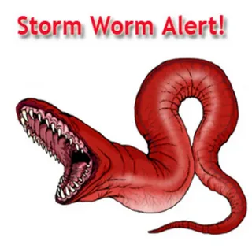
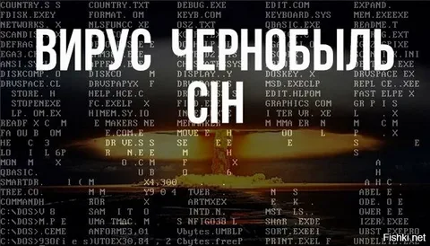

Безопасные вирусы
популярные вирусы
Storm Worm
Storm (также известен как Storm Worm) — троянская программа и ботнет, созданный для кражи личных данных. Начал своё распространение 19 января 2007 года и за короткий срок атаковал как минимум 1,6 млн компьютеров в более чем 80 странах, включив их в ботнет. Он способен заражать системы Windows 2000, Windows XP и Windows Vista.

Чернобыль
CIH, или «Чернобыль» (Virus.Win9x.CIH) — компьютерный вирус, написанный тайваньским студентом Чэнь Инхао (кит. трад. 陳盈豪, пиньинь Chén Yíngháo, англ. ) в июне 1998 года. Представляет собой резидентный вирус, работающий только под операционной системой Windows 95/98/ME.26 апреля 1999 года, в годовщину Чернобыльской аварии вирус активизировался и уничтожал данные на жёстких дисках инфицированных компьютеров. На некоторых компьютерах было испорчено содержимое микросхем BIOS. Именно совпадение даты активации вируса и даты аварии на ЧАЭС дали вирусу второе название — «Чернобыль», которое в народе даже более известно, чем CIH.
По различным оценкам, от вируса пострадало около полумиллиона персональных компьютеров по всему миру.
